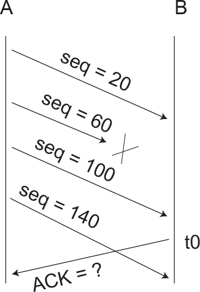

Acerca do protocolo de transporte TCP (Transmission Control! Protocol) utilizado na Internet, considere o esquema abaixo, que mostra a comunicação entre dois processos A e B. No diagrama, o tempo cresce de cima para baixo e as setas diagonais representam segmentos TCP enviados de A para B ou de B para À, dependendo da orientação da seta. Os números de sequência dos dados de aplicação enviados de A para B estão indicados sobre as setas. O processo À enviou segmentos com 40 bytes de dados de aplicação para B. O número de sequência do primeiro byte enviado através da conexão de A para B foi 20. Dos quatro segmentos enviados de A para B, o segundo segmento foi perdido pela rede e não alcançou o destino.
Com base na situação descrita acima, o número de confirmação (ACK) enviado pelo TCP de B para A, no instante de tempo t0, é igual a